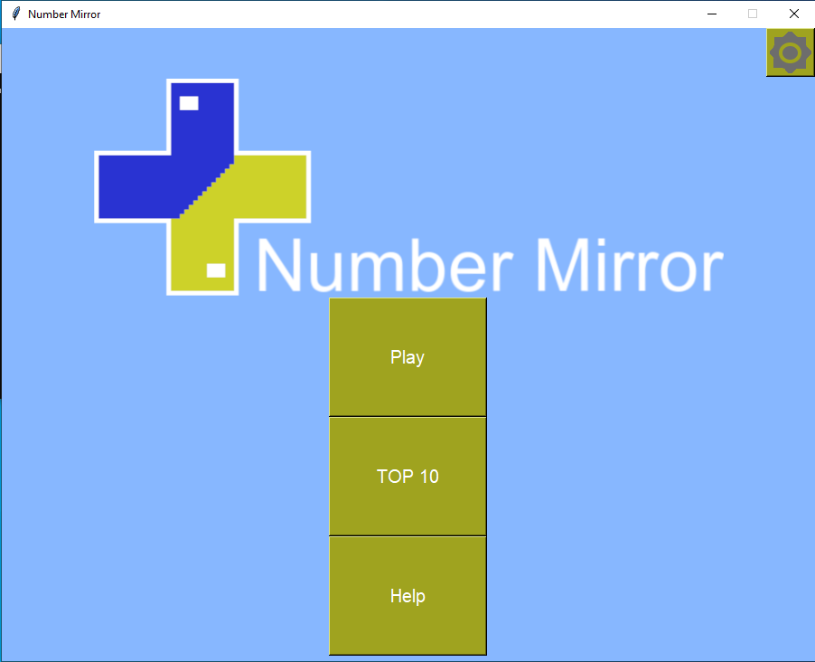
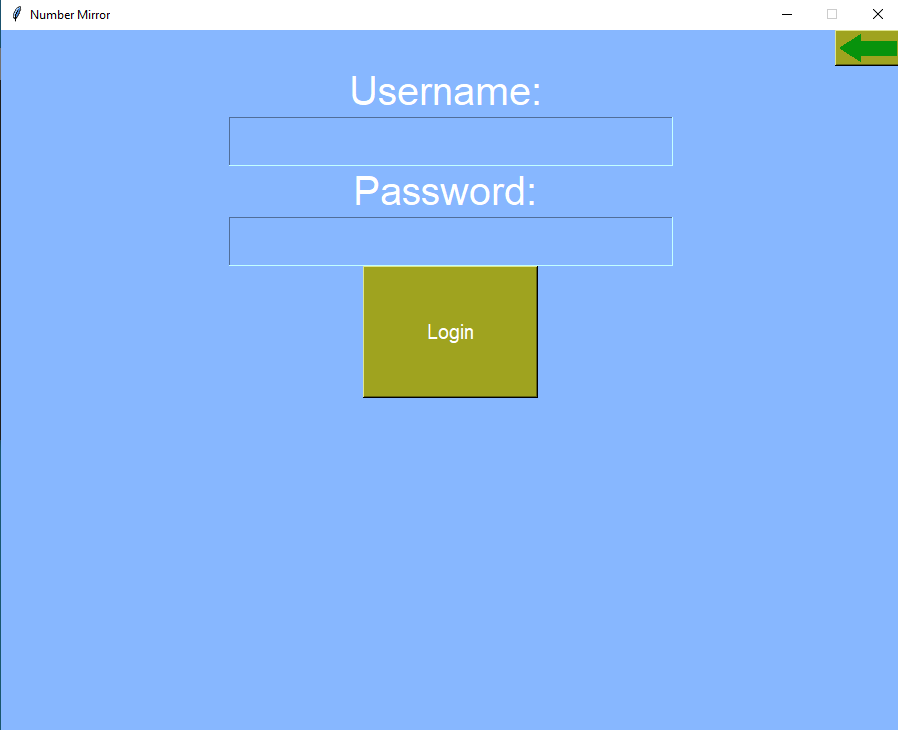
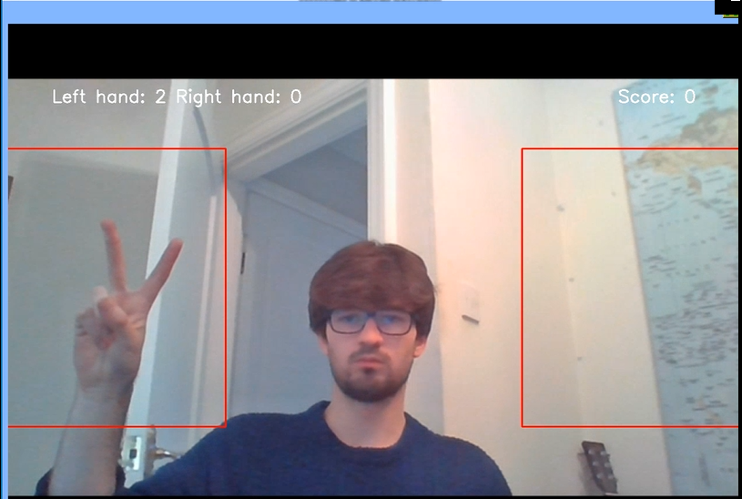
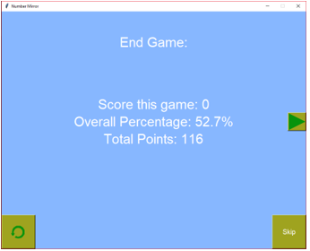
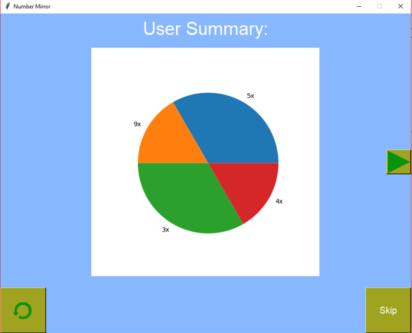
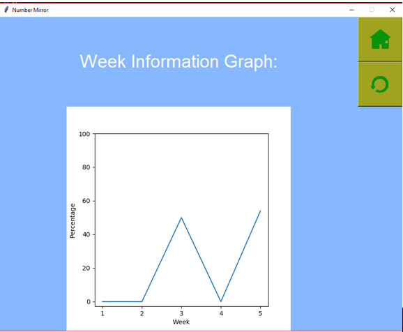

For my A-Level Computer Science coursework I decided to make a computer vision application I called this application Number Mirror. The point of it was to create an interactive way for young children to learn artihmetic. I used the programming language Python, the Computer Vision library OpenCV and the TKinter GUI library to achieve this. However I have to add a disclaimer, the application is incredibly inefficient. To use it you need to be using a white background and wearing black gloves to ensure the most accuracy. It is by no means revolutionary.
For the application I implemented a login system using an SQLite database. The program stored information about the users game statistics such as how many games they have won, how many they have lost and questions that a user has answered. One thing to note is that I stored the password in plain text which obviously is a huge problem.
The actual game itself worked reasonably well under certain conditions as explained. The program requires the camera to be completely still. It requires that you do not put your hand in the box during certain parts of the game. The program worked by taking multiple images of the background and then calculating the mean background. I calculated the background mean to eliminate noise due to the quality of the camera. The user is then asked to put their hand up and the program records the user's hand. Of course I used techniques such as gaussian blur to improve the accuracy of the program.
When a user got a question wrong the weight of the question stored in the database would be increased. This meant I could use a weighted random algorithm to make questions in which the user got wrong more likely to come up again.
I am sorry for the dodgy hair cut due to lockdown and the even worse choice of clothing. This picture will probably come back to haunt me but oh well.
Once the user has finished the game they are presented with end game information. They are first greeted with the number of points they got that game, their overall percentage out of all the games they have played and the total points they have accumulated. This is mainly for teachers so that they can see how well their student is performing.
The user is next presented with a pie chart of the types of questions that the user gets wrong. The possible types of questions were: addition, subtraction and the multiplication tables from 1 to 10.
Finally the user is presented with information relating to how much they have improved in the last five weeks. The y-axis displays the percentage of questions they got right and the x-axis displays the week in which the data was recorded. This helps the user visualise how much they are improving.
That concludes this post. I thought I would share my A-Level project with everyone since today marks the anniversary (almost) since I completed my A-Levels. I might upload the project to GitHub later, but I will once again reiterate it is incredibly inefficient.